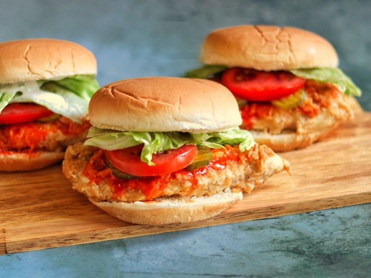

This recipe makes deliciously tender and juicy fried chicken sandwiches with a bit of heat from Buffalo sauce in every bite.
Step 1
Slice each chicken breast horizontally into 2 thin fillets. Place 6 fillets in a resealable zip-top bag with buttermilk, 1 tablespoon Buffalo sauce, and garlic powder. Seal the bag and shake to blend ingredients and evenly coat the chicken. Refrigerate for at least 2 hours or overnight.
Step 2
Preheat the oven to 350 degrees F (175 degrees C).
Step 3
Combine flour, poultry seasoning, and pepper in a shallow dish or pie plate. Blend with a fork or whisk.
Step 4
Remove chicken from the marinade and shake off excess. Dip chicken in the breading mixture until well and evenly coated on both sides. Discard the remaining marinade.
Step 5
Add enough oil to a large skillet so that it thickly coats the bottom and heat over medium-high heat until sizzling but not smoking. Place 2 chicken fillets in the skillet so they fit comfortably; do not overcrowd. Fry until crispy and golden brown, 2 to 3 minutes per side. Drain chicken on paper towels and repeat twice, adding more oil as necessary, to fry remaining chicken. Transfer chicken to a baking sheet.
Step 6
Bake in the preheated oven until chicken is no longer pink in the center and the juices run clear, 8 to 10 minutes. An instant-read thermometer inserted into the center should read at least 165 degrees F (74 degrees C).
Step 7
Remove chicken from oven. Place a chicken fillet on the bottom half of a bun. Add Buffalo sauce to taste. Top with pickle slices, tomato, and lettuce. Spread ranch dressing on the inside of the top bun and place over the sandwich. Repeat to make remaining sandwiches.